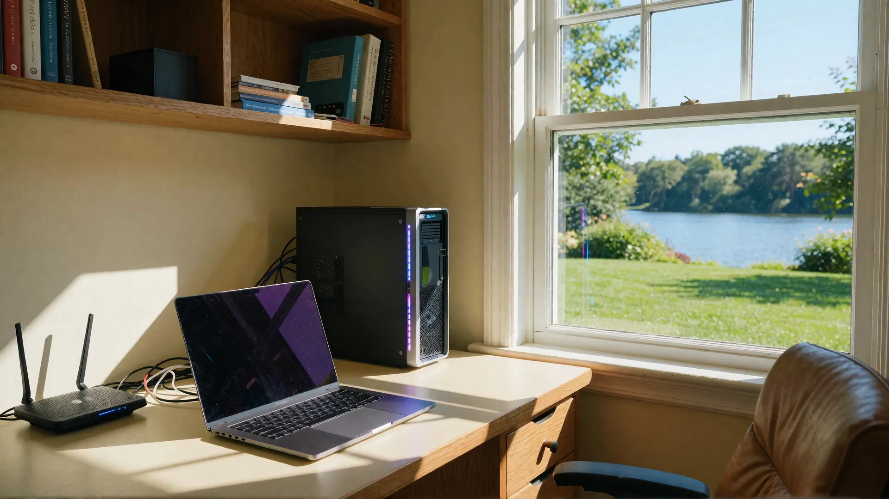
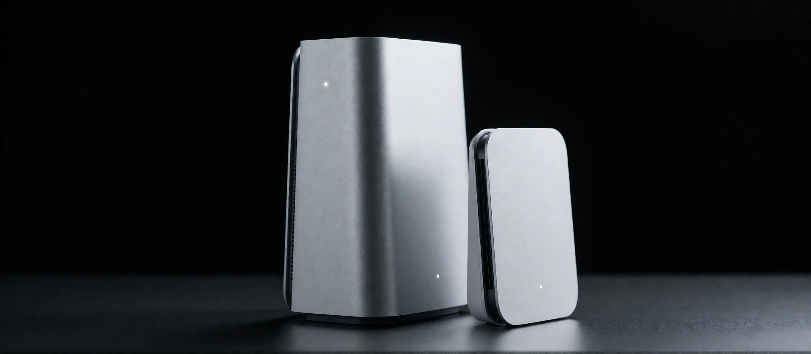
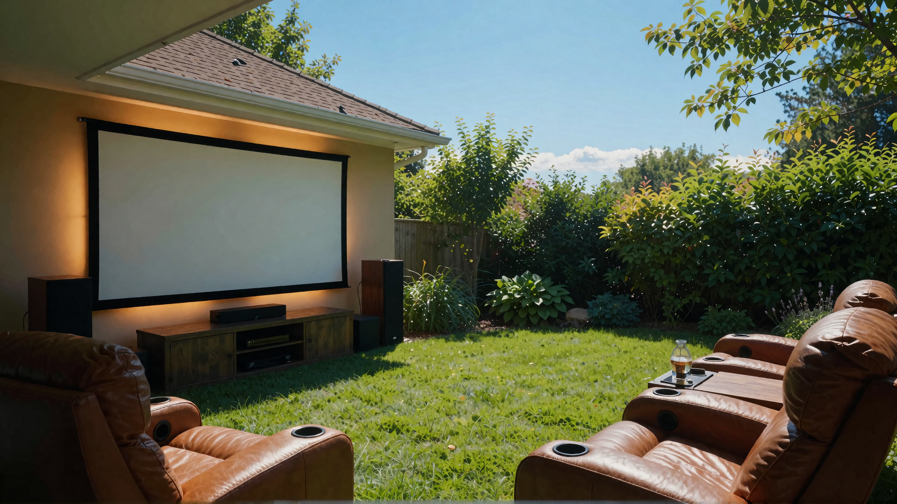
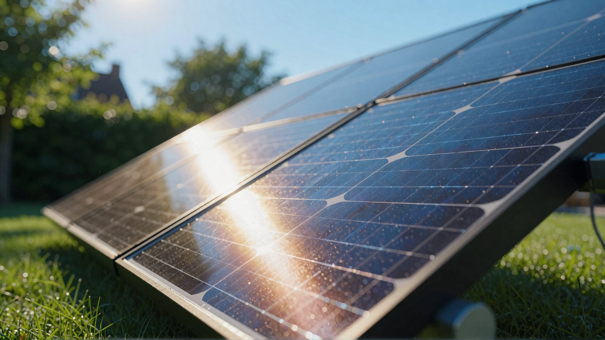
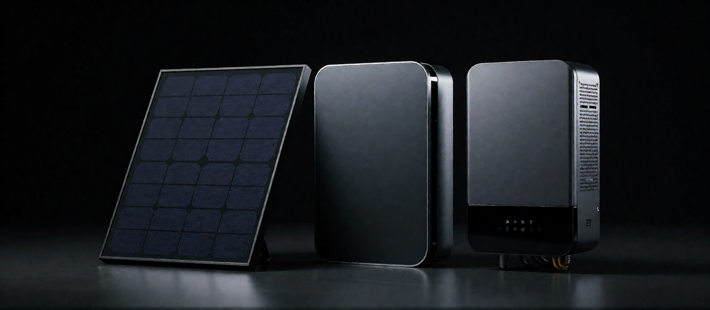
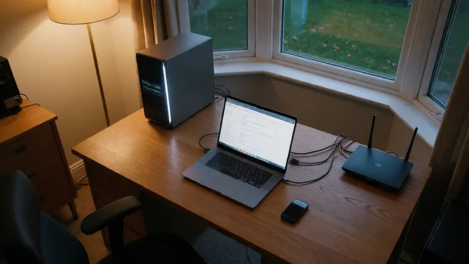
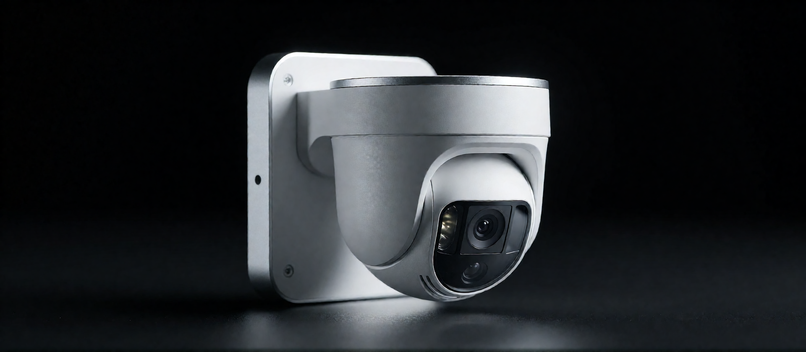
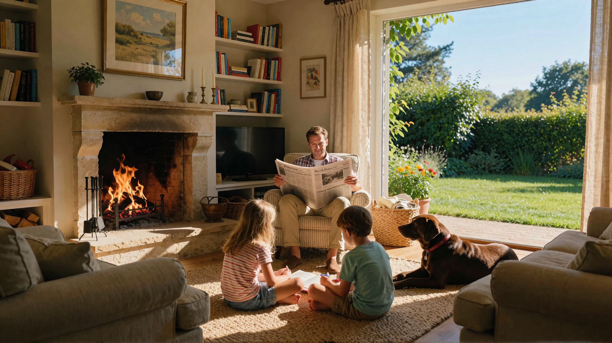
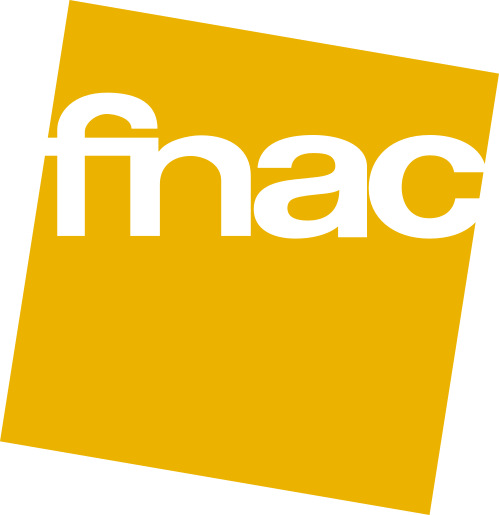

Un seul interlocuteur à Vouvry pour tout votre matériel
vente, installation et dépannage 7j/7 :
Informatique, sécurité, TV et solaire : installés et entretenus à domicile.
Installation et configuration de réseaux informatiques et Wi-Fi.
Vaud, Valais, Fribourg, Genève. Le service de proximité est basé dans le Bas-Valais : Vouvry, Monthey, Saint-Maurice, Aigle. Interventions 7j/7, réactives, la même qualité dans vos quatre cantons.
Routeurs optimisés, câblage structuré, couverture complète de la propriété.
Vente, installation et réparation : ordinateurs, smartphones, tablettes.
Étude, dimensionnement, pose et mise en service de vos panneaux solaires.
Batteries 2,56 à 15,36 kWh : votre solaire consommé jour et nuit.
Vente, installation murale, barres de son et systèmes audio sur mesure.
Maison sécurisée et connectée : la soirée vous appartient, nous veillons.
Caméras et systèmes de sécurité installés, configurés, mis en service.
Alertes en temps réel, visualisation depuis votre smartphone.
La batterie alimente la maison toute la nuit — reprise en moins de 10 ms.
Avant / Après
Nos réalisations
Ils nous font confiance
« Une installation impeccable, un suivi parfait. »
« Rapide, professionnel, à l'écoute. »
« La batterie a transformé notre consommation. »
Réseau
Sécurité
Informatique
Photovoltaïque
Batterie
TV & Audio
Réseau
Informatique
Photovoltaïque
Batterie MARSTEK
TV & Audio
Vidéosurveillance
Autonomie
Réseau
Informatique, sécurité, photovoltaïque et batteries.
Des solutions haut de gamme pour le Valais.
Notre méthode
Un seul interlocuteur : décrivez votre besoin, on vous conseille sur le matériel et la solution adaptée.
Étude personnalisée à domicile et devis clair — pour un PC, un Wi-Fi complet ou une toiture solaire.
Installation soignée à domicile, configuration complète, mise en service et suivi — vous n'avez qu'à profiter.
Panne de courant, réseau ou caméra : intervention sous 24 h à Vouvry, Monthey et Saint-Maurice.
« Installation impeccable, explications claires et suivi parfait. »
« Du Wi-Fi partout dans la maison, même au jardin. »
« La batterie de stockage a transformé notre consommation. »
Simulation gratuite
Estimez en 30 secondes la puissance conseillée, la production et le prix de votre installation — selon votre canton, votre facture et votre projet. Aucune donnée envoyée, juste des chiffres clairs.
Nos services
De la vente à la mise en service, nous réalisons l'installation complète — cliquez sur un service pour le voir en scène.

02 Réseaux & Wi-Fi Voir en scène → Routeurs, amplificateurs, switch, tirage de câbles Ethernet propre et sécurisé.
03 TV & rétroprojecteur Voir en scène → Fixation murale ou plafond, écran fixe ou motorisé, barre de son, réglages image & son.
04 Photovoltaïque Calculer ma toiture → Panneaux, onduleur hybride intelligent, suivi temps réel — maisons, villas, commerces, exploitations agricoles, immeubles.
05 Batteries Voir en scène → Stockage 2,56 à 15,36 kWh — batteries de ce type, rétrofit sur installation existante sans travaux.
06 Transfert de données Voir en scène → Fichiers, photos, logiciels, e-mails, favoris : de l'ancien PC vers le nouveau, rien ne se perd.
07 Vidéosurveillance Voir en scène → Caméras PoE 4K, alarmes, alertes en temps réel, accès smartphone.
08 Dépannage express 7j/7 Appeler maintenant → Diagnostic, réparation et mise en service à domicile — intervention sous 24 h.
Pour qui ?
Du studio à l'exploitation agricole, chaque installation est dimensionnée sur mesure.
Panneaux & batterie pour les particuliers.
Autoconsommation silencieuse, chauffe & recharge.
Réduction des charges, image responsable.
Larges toitures, gros volumes de production.
Énergie collective, parties communes.
Acheté n'importe où
Vous achetez dans le magasin de votre choix — je livre, j'installe et je configure chez vous, quelle que soit la marque.

FAQ
Oui — tuiles, tôle ou toit plat : nous étudions chaque toiture et réalisons l'installation adaptée, après étude et dimensionnement.
Oui — plug & play : la batterie se raccorde sur une simple prise secteur, sans modifier votre installation. Nous vérifions la compatibilité de votre onduleur avant tout devis.
Oui : achetez où vous voulez (Fnac, Interdiscount, Fust, MediaMarkt, Conforama…) ou laissez-nous conseiller le modèle adapté — nous nous occupons de la livraison, de l'installation et de la configuration complète.
Oui : fixation murale ou sur pied, écran de projection fixe ou motorisé, branchements (box, consoles, lecteurs), réglages image et son, intégration d'une barre de son.
2 à 5 jours ouvrables selon la taille du chantier, une fois l'étude validée — mise en service incluse.
Oui : dépannage rapide à domicile ou à distance. Appelez le +41 79 908 92 95.
Parlons de votre projet
Chemin du Grand-Clos 7
1896 Vouvry, Valais
Un seul interlocuteur — 7j/7 · VD·VS·FR·GE
Décrivez votre projet — réponse sous 2 h.
Votre projet ?